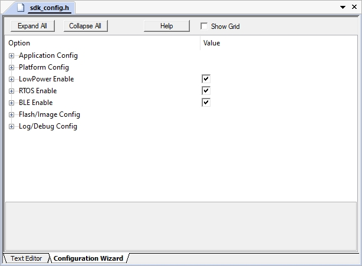
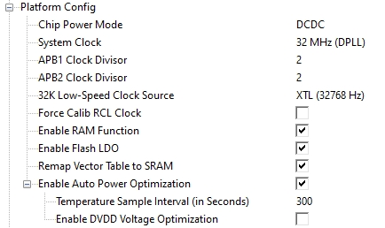
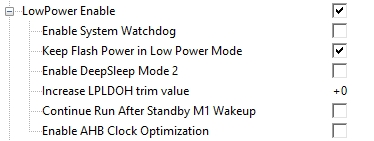
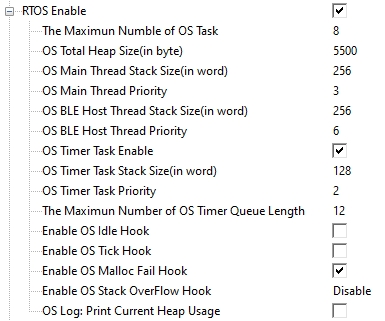
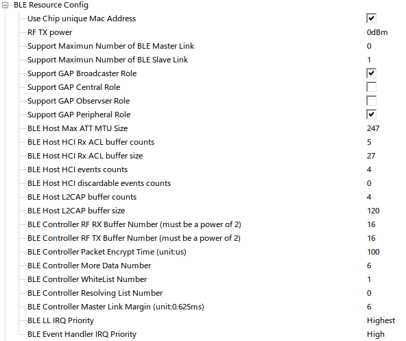
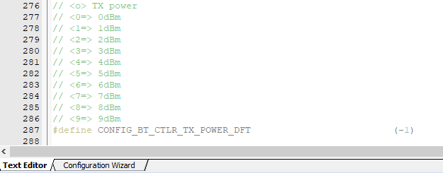
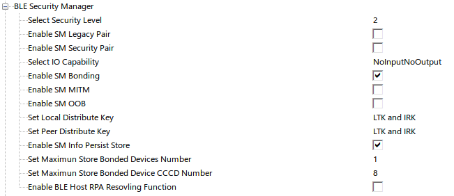
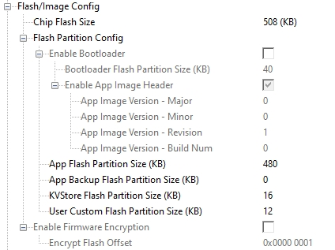
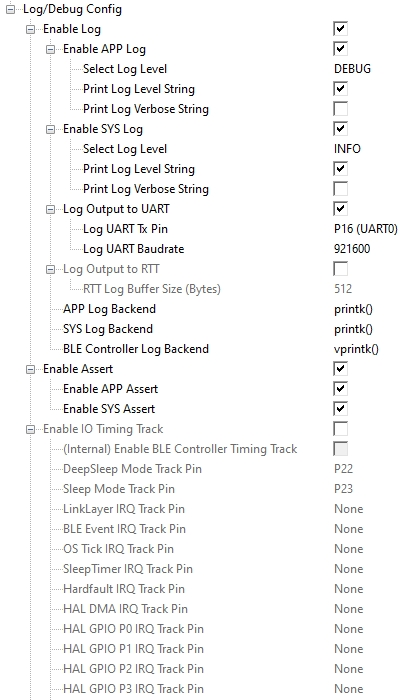

NDK Configuration 配置指南¶
1. SDK Config 系统简介¶
NDK 中设计了一套 SDK 配置系统，其面向用户的接口是一个名为 sdk_config.h的头文件，位于各个 App 工程目录内。结合 Keil MDK 的 Configuration Wizard 功能，用户可以方便地通过图形菜单的方式修改 SDK 中提供的各个配置。
2. SDK Config 配置说明¶
目前 SDK Config 配置共分为 7 大类，依次为 Application Config、Platform Config、LowPower Enable、RTOS Enable、BLE Enable 、Flash/Image Config、Log/Debug Config。

SDK Config Overview¶
注：其中第一个类别
Application Config，是为用户预留的菜单，用户可在自己的 App 中自定义一些 Config 配置，并将其放在 SDK Config 的Application Config配置菜单下以方便后续使用。
2.1 Platform Config¶
Platform Config 是与芯片平台相关的配置，包括时钟、电源、平台相关的特殊 Feature 等项目：

SoC Platform Configuration¶
Chip Power Mode：选择芯片的供电模式
SDK 中的例程大部分都是默认选择 DCDC 模式，用户也可根据项目需要切换至 LDO 模式
芯片在 DCDC 模式下动态功耗更低，但需要板级硬件电路的支持（BUCK外围电路）
System Clock：配置系统高速时钟频率
SDK 例程中，PAN107x 工程配置一般是默认选择 32MHz (DPLL)，PAN101x 工程配置一般是默认选择 48MHz (DPLL)
APB1 Clock Divisor：配置 APB1 时钟分频系数
芯片 APB1 上的外设有：I2C、SPI0、UART0、PWM、ADC、WDT、WWDT、TIMER0
SDK 中的例程一般是默认选择 2 分频，用户也可根据项目需要改变此分频值
实际项目中，若某些 APB1 上的外设需要工作在较高的速度下（如 SPI0），可能默认的 2 分频无法满足需要，那么可将 APB1 改为不分频（No Divider）
实际项目中，若对芯片的动态功耗有要求，但是对 APB1 上的外设速度要求不高，那么可将 APB1 分频改为能正常工作的最大值（需通过试验得出），以降低芯片动态功耗
APB2 Clock Divisor：配置 APB2 时钟分频系数
芯片 APB2 上的外设有：SPI1、UART1、TIMER1、TIMER2、CLKTRIM
SDK 中的例程一般是默认选择 2 分频，用户也可根据项目需要改变此分频值
实际项目中，若某些 APB2 上的外设需要工作在较高的速度下（如 SPI1），可能默认的 2 分频无法满足需要，那么可将 APB2 改为不分频（No Divider）
实际项目中，若对芯片的动态功耗有要求，但是对 APB2 上的外设速度要求不高，那么可将 APB2 分频改为能正常工作的最大值（需通过试验得出），以降低芯片动态功耗
32K Low-Speed Clock Source：配置系统低速时钟源
选择 RCL，芯片无需外接 32K 晶振，但精度相对较低（低功耗蓝牙应用的功耗会稍高一些）
选择 XTL，芯片需要外接 32K 晶振（32768 Hz），精度更高（低功耗蓝牙应用的功耗会更低一些）
选择 ACT32K，蓝牙内部 32K 定时器将使用高速晶振（32M XTH）分频后的时钟源，精度高，但此时仅支持蓝牙非低功耗的场景，一般是主机或者多连接的场景
Force Calib RCL Clock：选择是否在系统初始化的时候强制校准一次 RCL 时钟
若前面低速时钟源选择 RCL，则此处必须勾选强制校准 RCL 时钟，否则 RCL 不准确可能会影响 APP 定时相关的功能
Enable RAM Function：将一些对时间敏感的函数编译到 SRAM 中执行，加快程序执行速度，以达到降低功耗的效果（程序执行得更快，可以让芯片有更多时间处于进入低功耗模式）
此配置使能后，代码中带有
CONFIG_RAM_CODE前缀的函数将被编译到 SRAM 中执行，其中包括关键的 OS 调度函数、OS DeepSleep 低功耗处理函数、蓝牙中断服务函数等SDK 例程中，PAN107x 工程配置会默认使能此选项（PAN107x SRAM 有 48KB，相对充足），而 PAN101x 工程配置则默认不使能此选项以节省 SRAM 空间（PAN101x SRAM 仅有 16KB）
Enable Flash LDO：使能内部专用的 1.8v Flash LDO 给 Flash 供电
芯片上电默认 Flash 供电电源为芯片 VBAT，当使能此选项后，Flash 供电电源将切换至内部 1.8v Flash LDO，以达到降低 Flash 功耗的效果
SDK 例程中，此选项默认都是使能的，一般无需修改此默认配置
Remap Vector Table to SRAM：将中断向量表映射到 SRAM 中的指定地址，以加快中断响应速度
使能此配置会多占用 256 Bytes 的 SRAM 空间
SDK 例程中，PAN107x 工程配置会默认使能此选项，而 PAN101x 工程配置则默认不使能此选项以节省 SRAM 空间
Enable Auto Power Optimization：定时检测当前芯片温度，并根据温度自动优化芯片的电源配置（目前使用两个温度临界点（0℃、50℃）将温度分为三个区间）
通过子配置 Temperature Sample Interval 可以更改定时温度检测的时间间隔
使能子配置 Enable DVDD Voltage Optimization 后，常温下芯片数字电路的供电电源 DVDD 电压会由 1.16v 降至 1.12v 左右（实际产品中不建议使能此配置）
此功能通过芯片 ADC 模块读取芯片内部温度传感器数据，这个流程本身也会增加芯片动态功耗（5 分钟时间间隔配置下芯片平均电流约增加 200nA）
2.2 LowPower Enable¶
LowPower Enable 是与芯片低功耗相关的配置，包括低功耗使能、低功耗下的相关电源配置等项目：

LowPower Configuration¶
Low Power Enable：使能系统低功耗流程及低功耗相关的 API 接口
若同时使能了 OS，则芯片会在 OS Ilde Task 中自动进入 DeepSleep 低功耗模式
使能此配置后，可以通过调用
soc_enter_standby_mode_1()和soc_enter_standby_mode_0()两个接口使芯片分别进入 Standby M1 和 Standby M0 两种低功耗模式
Enable System Watchdog：使能系统 Watchdog 功能
Keep Flash Power in Low Power Mode：芯片 DeepSleep 状态下，Flash 不断电，而是切换至 DP 低功耗状态
Enable DeepSleep Mode 2：使能 DeepSleep Power Mode 2
若不使能此配置，则芯片进入 DeepSleep 状态后使用 Power Mode 1，此模式下芯片内部数字电路通过 0.5v LPLDOL 和 0.7v LPLDOH 这两个 LDO 配合供电，常温下芯片低功耗底电流约 3~4 uA
若使能此配置，则芯片进入 DeepSleep 状态后使用 Power Mode 2，此模式下芯片内部数字电路均通过 0.7v LPLDOH 供电，常温下芯片低功耗底电流约 6~7 uA
Increase LPLDOH trim value：抬高 LPLDOH 电压档位（档位步进约 50mV）
芯片 LPLDOH 电压值在校准后约为 700mV 左右，但某些应用场景下可能需要抬高 LPLDOH 电压值
Continue Run After Standby M1 Wakeup：芯片从低功耗 Standby M1 模式醒来后，CPU 接着从睡眠前的代码位置继续运行而不是复位
使能此配置后，芯片唤醒后 CPU 虽然没有复位，但芯片除 GPIO 外的所有外设状态都是复位的，因此醒来后需要重新配置使用到的外设模块
Enable AHB Clock Optimization：使能此选项后，若 OS 通过 Idle Task 进入芯片的 Sleep 状态（注意不是 DeepSleep 状态），则临时降低 AHB 时钟频率以节约芯片 Sleep 状态下的功耗（实际产品中不建议使能此配置）
2.3 RTOS Enable¶
RTOS Enable 是与 OS 相关的配置，NDK 中的大部分应用均以 FreeRTOS 为基础进行构建，且 NimBLE 必须依赖 FreeRTOS 运行：

RTOS Configuration¶
RTOS Enable：系统中使能 FreeRTOS
The Maximum Number of OS Task：设置 OS Task 的最大优先级
OS Total Heap Size：设置 OS Heap 大小，单位为 Byte
OS Heap 主要由下面这些对象消耗的，一般无需关心细节，可勾选 Enable OS Malloc Fail Hook 功能进行 Heap 余量检测，若不够则会打印 Malloc Failed Log，方案中可通过此方法自行调整大小，默认的工程一般都是稍有余量。
Total Heap
unit
IDLE Thread STACK
size*4
Timer Thread STACK
size*4
BLE Host Thread STACK
size*4
OS 相关的对象的使用，例如实例化定时器的个数，信号量的个数
\
BLE ATT GATT entry 等，一般服务越多，支持的角色，就需要的越多
\
BLE Host buffer，Host 使用的部分 buf，也是占用 Total heap size
\
OS Main Thread Stack Size：设置 Main Task 栈大小，单位为 Word
OS Main Thread Priority：设置 Main Task 任务优先级（值越大，任务优先级越高）
OS BLE Host Thread Stack Size：设置 BLE Host Task 栈大小，单位为 Word
OS BLE Host Thread Priority：设置 BLE Host Task 任务优先级（值越大，任务优先级越高）
场景
任务栈大小推荐值
备注
不支持配对加密
256 - 300 words
实际的栈大小还和用户的操作有关系
支持配对加密
400 - 500 words
实际的栈大小还和用户的操作有关系
OS Timer Task Enable：使能 OS Timer Task（软件定时器）
OS Timer Task Stack Size：设置 Timer Task 栈大小，单位为 Word
OS Timer Task Priority：设置 Timer Task 任务优先级（值越大，任务优先级越高）
The Maximun Number of OS Timer Queue Length：设置 OS Timer 支持的最大队列（Queue）长度，一般一个定时操作需要 4-5 个 Queue，详情参考 FreeRTOS 官方文档
Enable OS Idle Hook：使能 OS 调度进入 Idle Task 后给予用户的回调函数
Enable OS Tick Hook：使能 OS 调度进入 Tick 更新后给予用户的回调函数
Enable OS Malloc Fail Hook：使能 OS Malloc 内存失败后给予用户的回调函数
Enable OS Stack OverFlow Hook：使能 OS Task Stack 栈溢出检测功能，详情参考 FreeRTOS 官方文档
OS Log: Print Current Heap Usage：使能 Malloc 的 Log，在调用
pvPortMalloc()函数的时候打印 Heap 申请和使用信息
2.4 BLE Enable¶
2.4.1 BLE Resource¶

BLE Resource Configuration¶
Use Chip unique Mac Address
使用芯片的出厂的 mac 地址
RF TX power
支持范围是 -40 到 9dBm，最小步长是 1dBm，如果需要设置 0 以下，可以通过 text Editor修改.

Tx Power Configuration¶
Support maximun number of BLE Master Link
设置 ble controller 支持的 master links 数量，如果设置为0，表示不支持 master link。用户可以设置任意数量的 master link 数，具体可以设置多少个由RAM和Flash资源以及搜索连接的算法决定。
多个master link 建立连接以后，ble controller 能保证连接之间不冲突，且各个连接具有相同的或者不同的数据带宽(用户可配)。
Support maximun number of BLE Slave Link
设置 ble controller 支持的 slave links 数量, 如果设置为0，表示不支持 slave link。用户可以设置任意数量的 slave link 数，但是建议 slave link 数最多设置 4 个，原因如下：
slave link 数设置越多，消耗资源越多
slave link 数设置越多，建立连接以后，连接之间的冲突会很频繁，导致数据有较大延时；当冲突严重时，可能导致断连。
GAP 角色定义
Support GAP broadcaster role
Support GAP central role
Support GAP observer role
Support GAP peripheral role
Host Buffer 相关
BLE Host Max ATT MTU Size
设置ATT MTU Size，它决定了用户数据的大小，这个值必须 >= 23B。
BLE Host HCI Rx ACL buffer size 和 BLE Host HCI Rx ACL buffer counts
Host Rx ACL buffer用于 host 接收 controller 上报的 ACL data 的 buffer.
BLE Host HCI Rx ACL buffer size用于设置ACL buffer size, 其取值范围是27B - 251B, 如果使用LE Secure Connection, 则ACL buffer至少设置65B。BLE Host HCI Rx ACL buffer counts用于设置ACL buffer个数ACL buffer的设置必须保证至少能接收2个 ATT MTU Size的数据。
Host 没有Tx ACL buffer可以设置，因为Host 下发的 ACL data 直达 Controller， Tx ACL buffer在controller实现。
BLE Host HCI events counts
Host HCI event counts用于设置 Host 接收controller 上报的HCI event(除adv report event 外) buffer的个数， HCI event buffer size不需要用户设置，协议栈已经按照spec要求配置好了
Host HCI event counts应该根据实际情况配置，如果交互数据比较频繁或者多连接，建议HCI Event buffer Count >= 8, buffer少了将出现异常，Buffer 不够时会有log输出。
BLE Host HCI discardable events counts BLE Host HCI discardable events counts用于设置Host 接收 controller 上报的Adv report event buffer的个数，Host HCI discardable events buffer size 不需要用户设置，协议栈已经按照spec要求配置好了。
BLE Host L2CAP buffer size 和 BLE Host L2CAP buffer counts
L2CAP buffer用于蓝牙数据发送，包括SMP和ATT
L2CAP buffer是基于内存池技术实现的链式 buffer, 例如：假如用户配置L2CAP buffer参数是120B/4个，用户有240B的数据需要发送，那么协议栈首先申请一个120B的buffer，存储120B的用户数据，然后再申请120B的buffer，用于存取剩余的120B的用户数据，最后将这两个buffer通过链表连接为一个整体。
BLE Controller 相关
BLE Controller RF Rx buffer 和 BLE Controller RF Rx Buffer Number
RF Rx buffer 用于 controller 接收 peer 设备数据的 buffer, RF Rx buffer使用的是MAC层专用的一块RAM，在 pan107 上这个专用的 RAM 有 8KB，实际 BLE Controller 只能使用7.5KB。(RF Tx/Rx 共用 7.5kB专用RAM)
RF Rx buffer Size 由 Host HCI Rx ACL buffer size 决定
RF Rx buffer Number 需要配置，且 Number 只能是2的 n 次幂, 例如：2,4,8,16,32…
对于single connection的应用来说，RF Rx buffer 设置为 8 即可
对于multi connection的应用来说，由于 multi connection 共用 Rx buffer，所以需要确保平均每个connection 至少有1 - 2个Rx buffer可用。如果Rx buffer设置少了，当controller一直没有Rx buffer可用时，数据将一直重传，可能导致 peer 上层协议数据交互超时而主动断连。
BLE Controller RF Tx buffer 和 BLE Controller RF Tx Buffer Number
RF Tx buffer 用于controller发送数据的buffer， RF Tx buffer使用的是MAC层专用的RAM，在pan107上这个专用的RAM有8KB，实际BLE Controller 只能使用7.5KB.
(RF Tx/Rx 共用 7.5kB专用RAM)RF Tx buffer Size 由 Host HCI Rx ACL buffer size 决定
RF Tx buffer Number需要配置，且Number只能是2的 n 次幂, 例如：2,4,8,16,32…
对于single connection的应用来说，RF Tx buffer 设置为 4或者8 即可
对于multi connection的应用来说，multi connection中的每个connection的Tx buffer是各自独立的，因此设置越大, 消耗的MAC专用RAM越多，但是能保证多个connection具有同等的数据带宽，使多个connection具有极好的数据吞吐率。
BLE Controller Packet Encrypt Time
如果支持配对建议写到 300us，否则写 100us
BLE Controller More Data Number
用于配置一个connection interval发送包的最大个数， range: 1-6
BLE Controller WhiteList Number
用于配置白名单个数，根据实际情况设置，默认是 1
BLE Controller Resolving List Number
用于配置可解析列表的个数（目前尚不支持该功能）
BLE Controller Master Link Margin
用于设置多master connection之前的间隔， 用于多连接以调节connection数据带宽。
BLE 中断优先级相关
BLE LL IRQ priority
用于配置 BLE LL 中断优先级，默认 BLE LL 中断优先级是最高的。
如果用户的中断需要较高的优先级，且用户的中断执行时间足够短 ，例如 < 30us 时，可以将BLE LL中断优先级调低一档。
BLE Event Handler IRQ priority
用于配置 BLE Event Handler 中断优先级，默认 BLE Event Handler 中断优先级为 次高优先级。
如果用户中断需要较高优先级，可以调低 BLE Event Handler 中断优先级
需要注意 BLE Event Handler 主要处理 Controller 上报的 Event 和 ACL 到 host, 以及处理 Host下发的 HCI Cmd 和 ACL，如果中断优先级变低，则处理变的缓慢，对于实时性或者数据率要求高的应用慎用。
2.4.2 BLE Security Manager¶

BLE Security Manager¶
Select Security Level
用于设置应用最低安全级别，注意如果peer设备的安全级别小于这里设置的安全级别，协议栈为了安全将拒接对端数据交互。
Enable SM Legacy Pair 和 Enable SM Security Pair
用于Enable/Disable BLE Legacy Pair和 BLE Secure Connection
Select IO Capability
用于设置本地设备的 IO 能力
Enable SM Bonding / Enable MITM / Enable SM OOB
用于设置本地设备的认证能力
Support persist store key
用于使能pair信息存储功能，pair信息将常驻在flash上
Support maximun store bonded devices
用于设置支持的最大 bonding 数目，这个数目越大需要的 Key-Value-Store 的区域也越大
Support maximun store bonded device’s cccd
用于设置支持的最大bonding 设备的 cccd，根据实现项目来
Support host software rpa feature
用于使能 Host RPA 功能，建议一直开着
2.5 Flash/Image Config¶
Flash/Image Config 主要包括芯片 Flash 分区规划及特殊 Image 生成相关的配置：

Flash/Image Config¶
2.5.1 Chip Flash Size¶
指定当前芯片的 Flash 大小，需与实际使用的芯片 Flash 大小保持一致。
目前 PAN107x 芯片的 Flash 大小均为 512KB（其中尾部 4KB 为保留区域，存放芯片出厂校准信息，因此用户可用的实际空间为 508KB）
目前 PAN101x 芯片的 Flash 大小均为 256KB（其中尾部 4KB 为保留区域，存放芯片出厂校准信息，因此用户可用的实际空间为 252KB）
2.5.2 Flash Partition Config¶
Flash Partition Config 用于配置与 Flash 分区强相关的功能，如 Flash 各个分区的大小、是否使能 Bootloader等。
Enable Bootloader：使能 Bootloader
通过子配置 Bootloader Flash Partition Size 可以配置 Bootloader 分区大小（KB）
通过子配置 nable App Image Header 可以配置是否使能当前 App Image Header 功能
使能 App Image Header 后，可以通过配置项指定当前 Image 的版本号信息
目前 SDK 框架下，若使能了 Bootloader，必须同时使能 App Image Header，因为 SDK 中 DFU/OTA 组件均依赖 Image Header
App Flash Partition Size：设置当前 App Flash 分区大小（KB）
根据项目需要修改即可（必须配置为非 0 值才有意义）
App Backup Flash Partition Size：设置 App Backup Flash 分区（App 备份区）大小（KB）
是否使用 App 备份区需根据实际情况选择：例如当应用需要使用蓝牙 OTA 功能时，则必须使用 App 备份区，并且此区域大小应与 App 区保持一致，同时需使能 Bootloader；其他情况则可以不使用 App 备份区
KVStore Flash Partition Size：设置 KVStore Flash 分区大小（KB）
当应用中不使用 KVStore 组件时，可将此项配置为 0x0
当应用中需使用 KVStore 组件时，需将此项配置为 8（KB）的整数倍
User Custom Flash Partition Size：设置 User Custom 用户自定义 Flash 分区大小（KB）
当应用中不使用 User Custom 用户自定义分区时，可将此项配置为 0x0
当应用中需使用 User Custom 用户自定义分区时，需将此项配置为非 0 值（注意不要超出 Flash 大小，否则会弹出预编译报错提醒）
2.5.3 Enable Firmware Encryption¶
Enable Firmware Encryption 用于配置是否使能 App Image 加密特性。
此配置需配合 Image 加密脚本使用，详情参考 FW Encryption 例程。
当使能 Firmware Encryption 配置后，可以通过配置项 Encrypt Flash Offset 指定 Flash 的加密位置：
这里 1 个 offset 表示 1 个 Flash Page（256 字节），例如若希望加密 Flash 0x1000 ~ 0x10FF 地址区间，则需将 Encrypt Flash Offset 配置为 16
2.6 Log/Debug Config¶
Log/Debug Config 是与 Log 日志和 Debug 调试相关的配置：

Log/Debug config¶
2.6.1 Enable Log¶
Enable Log：使能 Log 日志打印功能
Enable APP Log：使能 App Log 相关功能与接口，用于 App 工程中的 Log 打印
通过子配置 Select Log Level 可以选择当前 Log 输出等级
通过子配置 Print Log Level String 可以选择是否打印 Log 等级前缀
通过子配置 Print Log Verbose String 可以选择是否打印 Log 所处的源码文件、行数、函数等信息
Enable SYS Log：使能 SYS Log 相关功能与接口，用于 SDK 底层的 Log 打印
通过子配置 Select Log Level 可以选择当前 Log 输出等级
通过子配置 Print Log Level String 可以选择是否打印 Log 等级前缀
通过子配置 Print Log Verbose String 可以选择是否打印 Log 所处的源码行数等信息
Log Output to UART：将 Log 输出至 UART 串口，可配置 UART Tx 引脚和波特率
通过子配置 Log UART Tx Pin 可以配置 Log UART Tx 引脚
通过子配置 Log UART Baudrate 可以配置 Log UART 波特率
Log Output to RTT：将 Log 输出至 Segger RTT，可配置 RTT Buffer 大小
通过子配置 RTT Log Buffer Size 可以配置 RTT Buffer 大小
APP Log Backend：选择 APP Log 的后端实现，推荐选择
printk以减少代码大小和任务栈消耗只有在需要打印浮点数的时候才建议选择
printf
SYS Log Backend：选择 SYS Log 的后端实现，推荐选择
printk以减少代码大小和任务栈消耗只有在需要打印浮点数的时候才建议选择
printf
BLE Controller Log Backend：选择 BLE Controller Lib 中 Log 的后端实现，推荐选择
vprintk以减少代码大小和任务栈消耗只有在需要打印浮点数的时候才建议选择
vprintf
2.6.2 Enable Assert¶
Enable Assert：使能 Assert 断言功能
Enable APP Assert：使能 App 工程中的 Assert 断言
Enable SYS Assert：使能 SDK 底层的 Assert 断言
2.6.3 Enable IO Timing Track¶
Enable IO Timing Track 用于配置是否使能 App Track 组件。
当使能 App Track 组件后，可以通过一些子项修改相关配置。
(Internal) Enable BLE Controller Timing Track：使能蓝牙 Controller 内部事件的 Timing Track
注意：无特殊需要请勿勾选此项，否则可能会影响 App 正常 IO 功能
… Track Pin：配置各模块的 Timing Track IO 引脚，其中：
以 “HAL” 开头的是 HAL Driver 预设的 GPIO Track 信号
以 “User” 开头的是用户可在 App 使用的 GPIO Track 信号
剩下的是一些重要系统流程中预设的 GPIO Track 信号
若相应的 GPIO 信号设置为 “None”，则表示 Disable 该信号，程序中不会编译相关 Code
2.6.4 Enable Startup Long Delay¶
在系统初始化的早期阶段，插入一段长时间的延时（约 1s），以满足某些调试需求。
例如在一个使能了 DeepSleep 低功耗的蓝牙应用中，系统会频繁进出低功耗，这会导致 SWD/Jlink 烧录变得困难（低功耗状态下由于电压原因，SWD 是无法正常工作的），影响调试效率，那么此时就可以使能这个长延时配置，JLink 在多次尝试 SWD 通信均不成功的时候，会拉一下芯片 Reset 引脚复位芯片，那么在复位后的系统初始化阶段大概率 JLink 就可以正常识别 SWD 并进入烧录或调试流程了。